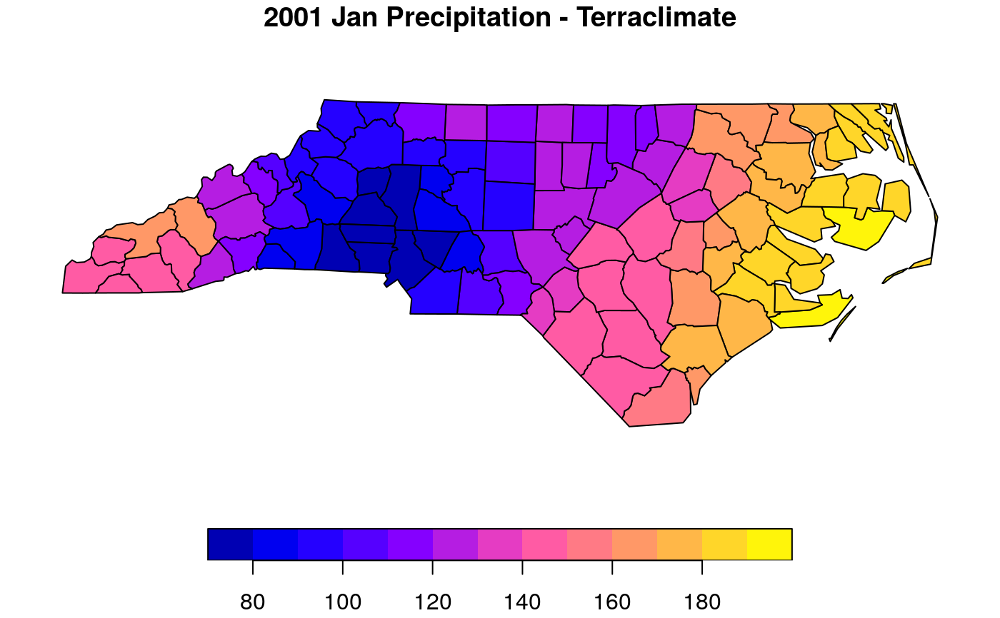

Extract values from a Image or ImageCollection spatial object at the locations of geometry object. You can use ee.Geometries, ee.Features, ee.FeatureCollection and sf objects.
ee_extract(x, y, fun = ee$Reducer$mean(), scale = 1000, id = NULL, sf = TRUE, ...)
| x | ee$Image or ee$ImageCollection. |
|---|---|
| y | ee$Geometry, ee$Feature, ee$FeatureCollection or sf objects. |
| fun | ee$Reducer object. Function to summarize the values. See details. |
| scale | A nominal scale in meters of the projection to work in. |
| id | Character. Name of the column to be used as a geometry index. |
| sf | Logical. TRUE returns a sf object |
| ... | reduceRegions aditional parameters. See ee_help(ee$Image()$reduceRegions) for details. |
The fun arguments just admit Reducer objects that return one value. These are:
allNonZero: Returns a Reducer that returns 1 if all of its inputs
are non-zero, 0 otherwise.
anyNonZero: Returns a Reducer that returns 1 if any of its inputs are
non-zero, 0 otherwise.
bitwiseAnd: Returns a Reducer that computes the bitwise-and summation of its inputs.
bitwiseOr: Returns a Reducer that computes the bitwise-or summation of its inputs.
count: Returns a Reducer that computes the number of non-null inputs.
first: Returns a Reducer that returns the first of its inputs.
firstNonNull: Returns a Reducer that returns the first of its non-null inputs.
kurtosis: Returns a Reducer that Computes the kurtosis of its inputs.
last: Returns a Reducer that returns the last of its inputs.
lastNonNull: Returns a Reducer that returns the last of its non-null inputs.
max: Creates a reducer that outputs the maximum value of its (first) input. If numInputs is greater than one, also outputs the corresponding values of the additional inputs.
mean: Returns a Reducer that computes the (weighted) arithmetic mean of its inputs.
median: Create a reducer that will compute the median of the inputs. For small numbers of inputs (up to maxRaw) the median will be computed directly; for larger numbers of inputs the median will be derived from a histogram.
min: Creates a reducer that outputs the minimum value of its (first) input. If numInputs is greater than one, also outputs the corresponding values of the additional inputs.
mode: Create a reducer that will compute the mode of the inputs. For small numbers of inputs (up to maxRaw) the mode will be computed directly; for larger numbers of inputs the mode will be derived from a histogram.
product: Returns a Reducer that computes the product of its inputs.
sampleStdDev: Returns a Reducer that computes the sample standard deviation of its inputs.
sampleVariance: Returns a Reducer that computes the sample variance of its inputs.
stdDev: Returns a Reducer that computes the standard deviation of its inputs.
sum: Returns a Reducer that computes the (weighted) sum of its inputs.
variance: Returns a Reducer that computes the variance of its inputs.
#> Requesting Earth Engine authorization ... DONEterraclimate = ee$ImageCollection("IDAHO_EPSCOR/TERRACLIMATE")$ filterDate("2000-01-01","2001-01-01")$ map(function(x) x$select("pr")) nc = st_read(system.file("shape/nc.shp", package="sf"),quiet = TRUE) %>% st_transform(4326) %>% sf_as_ee() fun <- ee$Reducer$max() eenc_rain = ee_extract(x = terraclimate, y = nc, fun = fun, id = "FIPSNO") plot(eenc_rain[2],main="2001 Jan Precipitation - Terraclimate", reset = FALSE)## time series dev.off()#> null device #> 1ee_nc <- ee_nc_rain#> Error in eval(expr, envir, enclos): object 'ee_nc_rain' not found#> Error in st_geometry(ee_nc) = NULL: object 'ee_nc' not found#> Error in eval(expr, envir, enclos): object 'ee_nc' not found#> Error in plot(time_serie, ylab = "pp (mm/month)", type = "l", lwd = 1.5, main = "Precipitation"): object 'time_serie' not found#> Error in points(time_serie, pch = 20, lwd = 1.5, cex = 1.5): object 'time_serie' not found